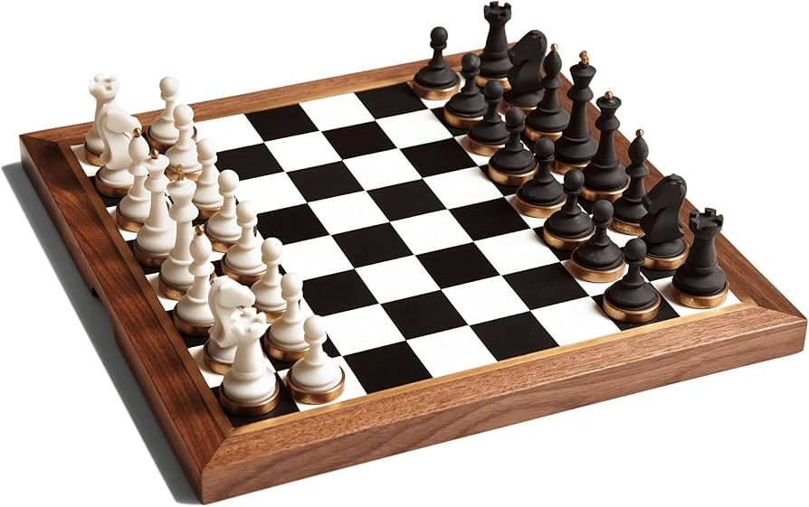
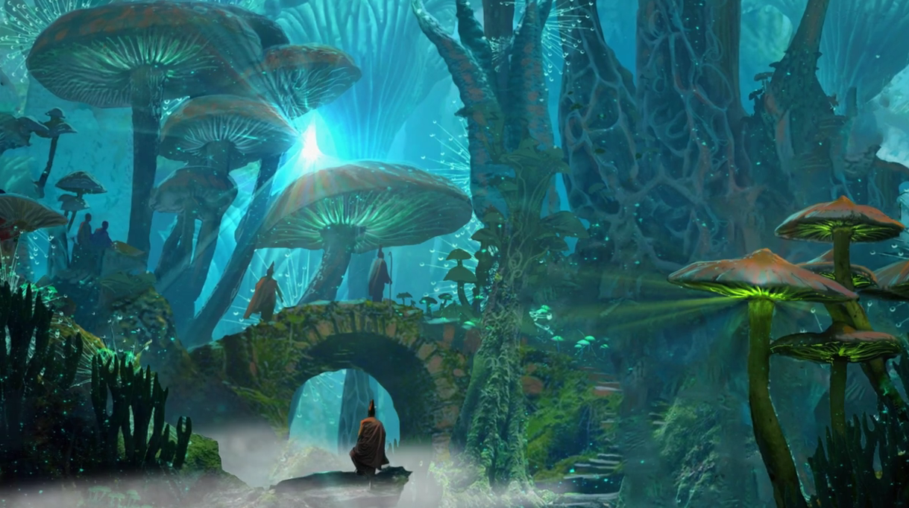

MIS PROYECTOS DE ANIMACIÓN DE GRAFICOS
DE IPANAQUE VALDEZ ZAHIR ARNOLD
Proyecto 1 - Tablero de Ajedrez

Proyecto 3 - Movimiento y Tiempo de Animación
Proyecto 4 - Animación por Pasos

Proyecto 6 - ClipPath y Parallax


ANIMACION EN BLENDER
Animación Creativa - Pacman
Esta animación en 3D fue inspirada en el universo de Pac-Man, desarrollada completamente en Blender. Se aplicaron técnicas de modelado, materiales, iluminación y animación para crear una escena dinámica que demuestra el uso de herramientas fundamentales del software.
Animación Ciudad Arcilla
Esta animación en 3D se centra en el movimiento de la armadura (rigging) del personaje desarrollada completamente en Blender. Se aplicaron técnicas de animación por fotogramas clave (keyframes) y un proceso de renderizado optimizado para capturar de manera fluida y dinámica una escena de 185 cuadros que demuestra el uso de herramientas fundamentales del software.
Mis Proyectos de Animación de Gráficos © 2026